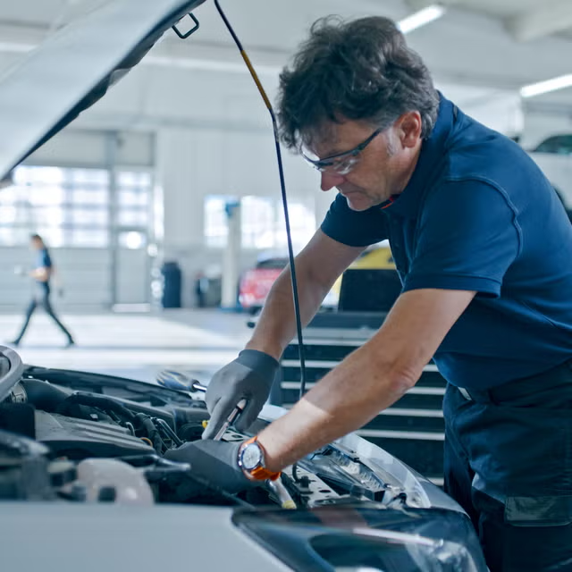

Tu taller de confianza
Realizamos revisiones completas, mecánica rápida, cambios de aceite, frenos, neumáticos, diagnosis electrónica y todo lo necesario para mantener tu vehículo en perfecto estado. Nuestro equipo trabaja con dedicación y transparencia, explicándote cada paso para que siempre sepas qué necesita tu coche y por qué. Nos esforzamos por ofrecer un servicio honesto, rápido y adaptado a tus necesidades. Ya sea una avería inesperada o un mantenimiento programado, te asesoramos de forma clara para que tomes la mejor decisión sin sorpresas. Queremos que vuelvas a la carretera con total tranquilidad y la confianza de estar en buenas manos.